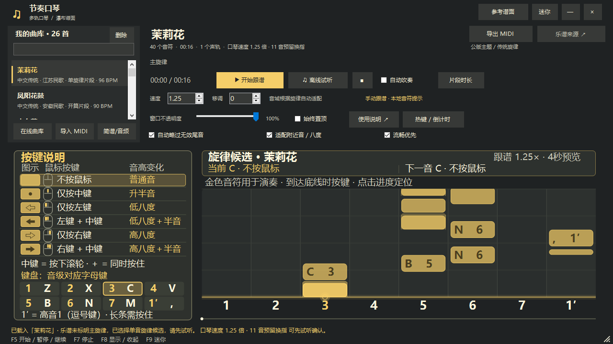

口琴演奏与谱面优化
让试听、导出与口琴可奏范围一致，减少连续发音的额外延迟，并使当前与下一音的指法更容易辨认。
1.8.3 已实现并通过整合检查：26 组、7653 项断言，退出码 0。试听与导出按口琴音域保持休止，连续音提前安排换指，谱面新增接续提示与鼠标指法高亮。根目录启动程序已更新。
改动范围
| 任务 | 实现位置 | 验收标准 |
|---|---|---|
| 统一口琴输出 | MainForm.cs、PlaybackPlan.cs 与相应测试 | 不可奏音在试听和导出中保留为原时刻的休止；后续音不提前，目标时长不缩短，原曲不变。 |
| 连续音的换指时序 | AutoPlayer.cs、AutoPlayerTests.cs | 在音长允许时预留同键重触与修饰键切换间隔，后续起音对齐谱面；仍遵守最短按键时长、暂停和释放保护。 |
| 谱面接续提示 | RhythmCanvas.cs、WaterfallReadabilityTests.cs | 当前与下一音明确区分，休止和末音结束不误导；当前鼠标指法同步高亮，完整和迷你图例保留。 |
| 仓库与使用入口 | 仓库名称、根目录 README.md、文档首页与使用指南 | 仓库名为 Rhythm-harmonica，README 涵盖用途、快速开始、选谱、音频转录、键位与构建。 |
实现约束
- 沿用 C# 5、.NET Framework 4.8、WinForms，不增加模型或软件依赖。
- 现有整曲八度适配已保护旋律走向，继续保留；不以逐音八度折叠或删除短音的方式强行平滑旋律。
- 保留原 MIDI、录音、曲库、个人设置与账号数据。测试使用隔离目录与合成音符。
- 保持深灰金色界面、左侧完整指法、右侧瀑布与等比缩放；不更改游戏前台、权限或输入保护。
执行与验证方式
- 用现有测试框架新增可复现的失败用例，再分别实现输出一致性、输入时序和提示绘制。
- 先跑对应专项测试，再运行整合检查；真实前台不可用时明确使用
-WithoutForeground，不据此声称游戏实测。 - 离屏渲染完整与迷你谱面，检查长指法、密集音符、休止、末音和缩放。
- 构建对应版本，核对个人文件不变、README 与本地文档链接、GitHub 远端提交与文件哈希。
效果解释
本轮优先处理可验证的节奏和显示问题。真实混音仍可能出现伴奏误识别，优先使用明确的主旋律 MIDI，并对转换结果试听。合成音符、时序与渲染检查不等于人工听感评价或真实游戏演奏验证。
实际验证结果
- 完整的非前台检查：运行
程序文件/scripts/run-checks.ps1 -WithoutForeground，26 组、7653 项断言通过。包括引擎、音域与计划、试听、导出、模拟输入、曲库、像素绘制、窗口布局、打包和离线组件安装。 - 连续起音：旧实现中同键第二音应在 600 ms 起音，实际为 620 ms；换修饰示例应在 200 ms 起音，实际为 240 ms。新增三类共十个播放场景，覆盖 0.5/1/1.5 倍速、同键、半音与八度组合及真实休止；自动演奏假输入回归共 326 项通过。保留 45 ms 最短按键、20 ms 同键间隔与 35 ms 修饰准备时间，极短密集谱仍可能受最短时序约束。
- 输出一致性：主窗真实试听调用、可奏副本、WAV 静音区、MIDI 保存与结束事件通过专项验证；不可奏音不再占用可奏试听音符额度，速度只换算一次。专项合计 395 项，已包含在整合检查中，不重复累计。
- 显示：瀑布基础 114 项、可读性 3234 项通过，覆盖 96/144/192 DPI、完整与迷你、长组合键、密集音符、休止、结束与候选标记。已目测 1200×360 和 900×270 原生控件离屏 PNG，图例与提示清晰；测试不向游戏发送输入。
- 原始资料：34 个个人曲目、录音、曲库、设置及账号会话文件的 SHA-256 与修改前一致。未更改转录模型与原曲音高策略。
- 独立审查：按完整源码与测试差异核对时序、暂停恢复、休止和渲染缓存，没有发现本轮新增的可操作缺陷。

验证边界：未向真实游戏发送输入，未重新运行混音模型推理或进行人工听感评分。非前台检查不包含原生全局热键和前台鼠标穿透断言。浏览器控制通道不可用，文档只做静态链接与结构核对；谱面图片已实际渲染并目测。